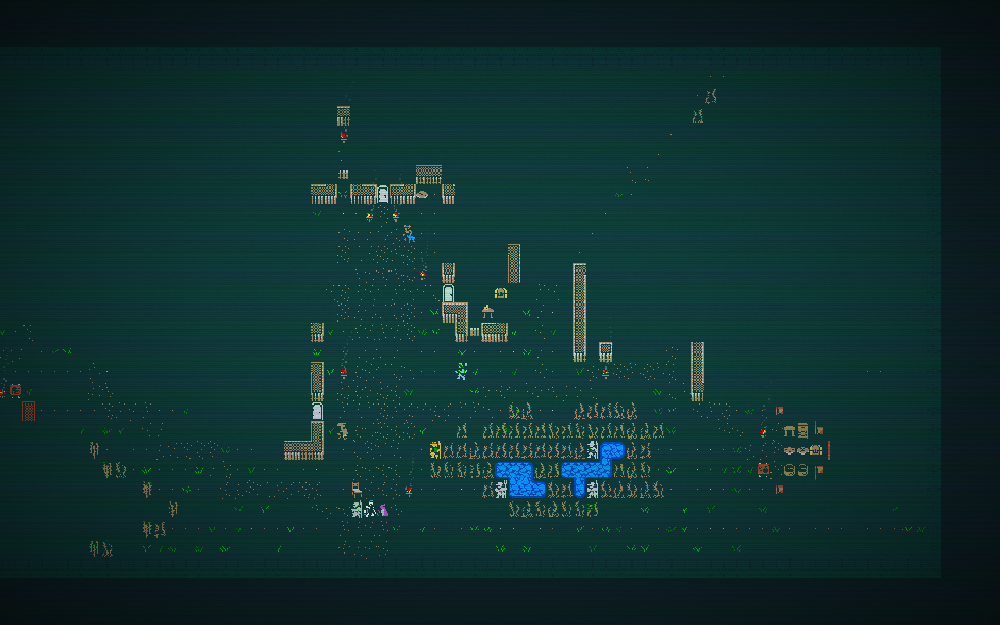
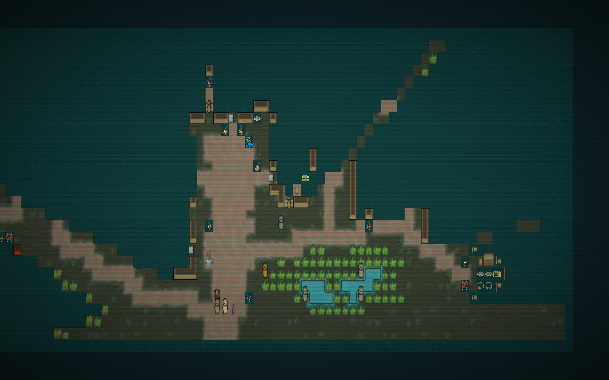

One adult dromad race model, built from editable vector paths. Qud supplies identity, the long neck, muzzle, dulla, hump and palette. RimWorld references guide the rendering conventions. These assembled asset previews are separate from the native captures below.
Large views show construction; small views show readability at 52 × 65 pixels. West mirrors east. Limbs remain in the body graphic. Skin/detail and item colors use separate layers. Side clothing has one visible sleeve and drapes over the hump; the back has no front opening.
The original icon supports a compact upright silhouette. Its unseen surfaces are authored interpretation. Native equipment slots corroborate hand-bearing anatomy but do not establish appearance by themselves. The robe is fitted to this body; this does not claim arbitrary garments fit arbitrary races. Personal jewelry, ink and other appearance overlays remain postponed. Earlier ImageGen head concepts are superseded.
Body, equipment and reference contract · Authoritative specification
Verified in actual Qud: directional layers, native equip/unequip, palette, visibility, hurt, look and save/load. Full frames are unchanged; magnified windows only adjust the browser view.

